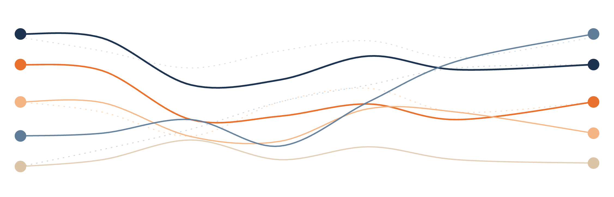

4 Cleaning Data

The scientific study of humans is a messy process. They don’t always understand what we’re asking in a survey, or do what we want them to do in a behavioral study. Some people are nervous of looking a certain way, so will answer questions not as they truly believe but as they want other people to think of them. Other people just want to finish the study as fast as possible and get paid, so they complete tasks without paying much attention. Sometimes, participants don’t want to answer a question at all. Other times we the researchers made a mistake in creating the study in the first place.
For these reasons, the preparation of human data for analysis - data cleaning - is an important skill. It is the process of reorganizing a dataset so that it has the values we want to analyze and not the ones we don’t, in a format that works for our planned analysis.
Data cleaning is also a time consuming process. Analysis of any research study is often 80%+ data cleaning with a much smaller proportion of time dedicated to running models or testing hypotheses.
The difference between clean and dirty data can be the difference between a successful research study and noisy data that no one can understand. In this chapter, we will spend time learning the most helpful data cleaning steps for psychological data.
4.1 Subsetting data
Some research studies are simple to conduct, with just a couple variables recorded. Other studies can be massive endeavors with many variables collected at once for the purpose of several different hypotheses.
For example, the General Social Survey is a nationally representative survey run every year in the US since 1972. It collects data from hundreds of thousands of people on hundreds of variables, including demographics, behaviors, and attitudes relevant to US society. It has provided data for more than 130 research papers that all studied a different hypothesis.
That’s a lot of data to manage! For this reason, sometimes you want to focus on viewing only a subset of your variables in a data frame. To continue our use of the studentdata dataset from last chapter, let’s say we only care about one research question - how much sleep do students get depending on their year? The data frame would be easier to read if it only included these variables and not all the others. Let’s open up that dataset and see where these variables are.
Finish the code below to be able to see the dataset.
By counting columns from the left, we can see that CollegeYear is the 6th column and SleepHours is the 8th column. Thus, one way we can subset our data is by indexing the data frame to just those column numbers.
Notice that we saved the subsetted data as a separate object here. What do you think would happen if we saved studentdata[,c(6,8)] to the object name studentdata?
If we save the subsetted data to the same data frame name, it will overwrite the original data frame. Doing this would mean we can no longer access the variables we removed, and we’d have to reload the data file to get it back. This process is called destructive editing. In general, we don’t want to do this - we don’t want to permanently erase any data. Thus if you’re manipulating data in a data frame, it’s usually best to save the manipulated data as a new object. That way you can always access the original data again if needed. Definitely don’t save manipulated data frames as a csv that replaces the original file you loaded the data from, or you won’t be able to get it back!
The above process works for subsetting variables, but is kind of clunky. You have to manually count column numbers, which is prone to error. What most people do instead is use a package written specifically for making data cleaning easier, called dplyr (dee-ply-er).
After we install the dplyr package and load it from the library, the select() function provides easy syntax for subsetting. When using select(), we just need to provide arguments to tell R which data frame to work on (as the first argument) and which variables to select from that data frame.
You may need to scroll the page up and down to see all of the output. It’s quite a lot because the function select() will print out all the values of the selected variables.
Sometimes you want to look at a subset of observations, not variables. Notice the first person in the studentdata dataframe was a first year. Are they the only person of that class year in the data? What happens if we put 1 as an argument in select()?
The select() function only works on variables (or columns of the data frame), not values. In this case, since you gave it the number 1 for the second argument, it thought you were asking for the 1st column, so it gave you that.
To get a subset of observations (or rows of the data frame) we use a different dplyr function: filter(). This function filters the data frame to show only the observations (rows) that match some criteria. For example, here is the code that will return only the data for first years:
The function filter(), like select(), returns a data frame. In this case, the data frame has 2 rows because that’s how many people responded with ‘1’ for CollegeYear.
How could you use filter() to return a data frame of everyone who was at least a junior?
If junior year is the 3rd year, then use filter(studentdata, CollegeYear >= 3)
4.2 Filtering bad data
Filtering is very useful for removing data points we don’t want, such as the bad outliers and missing values discussed in Chapter 2. To remove bad data, we need to decide what counts as unrealistic or poor measurement.
Often in human subjects research, the experimenters will record some sort of information to make sure the study is progressing as it should and the participants are completing the study correctly. For instance, an attention check is an easy question in a survey that everyone should get correct, if they are paying attention. If they provide an incorrect or nonsensical answer to an attention check, that could mean they weren’t paying good attention to the other questions either and thus their data shouldn’t be trusted.
In our data, the instructions for answering IDLast was to provide the last digit of their student ID number. However someone students weren’t paying good attention, and entered more than one digit. Let’s treat this variable as an attention and filter out anyone who didn’t follow instructions.
Write code below to create a new data frame that excludes anyone with a value greater than 9 in IDLast.
Something like filter(studentdata, IDLast <= 9) would work.
Note that filter() filters in, so the filtering logic statement should be true for all the data points you want to keep.
Got it working? Let’s see how many people we removed by comparing the length of this cleaned dataset to the original raw data:
Another reason to exclude observations from a dataset is because of missing values. It is very common in psychology to have at least a few missing values somewhere. In a data file, this would likely look like a blank cell where a value should otherwise be. When loaded into R, blank cells are represented with the value NA (“not available”). If your dataset represents missing data in some other way (e.g., some people put a nonsense value like -999), you should recode the values as NA when working in R (recoding will be discussed later in this chapter).
Let’s consider the SleepHours variable. First, a function called is.na() can be used to tell you whether an object is NA or not (it will return FALSE or TRUE). If we apply that to an entire vector, it will return a vector of falses and trues corresponding to what indices in the vector have an NA value.
Based on this, we can easily see some missing data in this variable - there are TRUE results to the question “is this data point NA?”
Now that you can find missing data, the big question is - what to do about it? We mentioned at the end of Chapter 2 that there are different opinions on how to handle outliers and missing data. Most commonly, researchers just remove observations with values missing on variables they’re analyzing. Others figure out what the missing value most likely is and inserting that value into the dataset via imputation. For this exercise, we will use the exclusion method.
Can you remember what the ! operator does? This code returns a data frame that includes only cases for which SleepHours is not equal to NA.
If you have multiple filtering steps to do, note that you can include multiple logic statements at once in filter() as separate arguments separated by commas.
4.3 Renaming variables
Another common step in data cleaning is changing the names of variables to be more descriptive. Conisder the variables StatsEmotions_1 through StatsEmotions_10. These variables are the responses to survey questions about how much learning statistics made them feel each of ten different emotions. The raw variable names are not very descriptive, and it would be easier to remember what they mean if they were renamed to each emotion.
The colnames() function can be used to tell you the current names of all the variables in a data frame:
If you wanted to change these names, you could write a new vector of column names and assign that vector to colnames(studentdata) on the left hand side of the assignment operator.
Alternatively, if there are a lot of variable names and you only want to rename a few of them (like we do with the emotion names), the rename() function from dplyr is a convenient option. The first argument is the data frame to modify, and then you specify each new variable names as arguments in the form of new_name = old_name.
4.4 Recoding variables
Not only can you change the names of variables, you can also change the values or data types used to represent those variables. Changing the values themselves is called recoding a variable. For instance, now that we know which variable represents how happy students felt, we might want to know who was more or less happy. However, look at what values are currently in this variable:
This is an ordinal variable, recorded as character/qualitative data. As we learned in Chapter 2, we can’t do math operations like <= or max() on character data. But we can recode this variable to be numeric, which would give us numbers to use for these operations.
In base R, you could set up a for loop and several if/else statements to change these values based on the current labels:
Whew, that was a lot! Alternatively, dplyr has a function that handles all that control flow for you under the hood, making it much easier to write the code. This function is recode_values(). As the first argument, recode_values() takes a variable you want to modify. The next argument, from, should be a vector of all the levels of the values you want to change. The last argument to is a vector of what the the new values should be, in the same order as the from vector. When the code runs, any row that is currently the first value in from will become the first value in to, and so on.
Reverse coding is another common data cleaning step. It involves reassigning values to a variable like above, but in a reverse sequence. Sometimes surveys ask questions in a negatively-worded way, such that a low score on the question means a high value on the construct of interest (e.g. measuring extroversion with a question like “I usually prefer to be by myself”). In this case, we would want to reverse code the variable so that we don’t accidentally misinterpret what the values mean.
At this point, you may be noticing a trend in the code we’ve been learning. First, like there are multiple ways to write a paragraph to communicate the same overall message, there are multiple ways to write code that produce the same output. There is rarely one right answer to a coding problem1.
Second, among the data cleaning options we’ve been learning, there is often a way to do an operation without any extra packages and a way to do it with a package like dplyr. When you perform actions without using any additional packages, that’s called coding in base R. Alternatively, dplyr is a popular package from a specific set of packages for data science called the tidyverse. When you search online for methods to do something in R, you’ll see mentions of base R vs. the tidyverse. Neither of these approaches is more correct than the other, so you can choose the general approach you like best for your own work (though it is good to be able to read code from both approaches so you can always tell what other people are doing).
4.5 Creating new variables
The variables we start with in a dataset are not always the variables we want to do analyses on. Sometimes these raw variables need to be transformed in some way. This could involve changing the units of numeric values, subtracting a pre-test score from a post-test score, summing multiple survey questions into a composite score, etc.
We can create and add new variables to a dataset using information in the existing variables. For instance, maybe we aren’t interested in specific emotions students felt, but how much they experienced positive emotions generally. For this research question, we may want to sum up the scores of all the specific positive emotions (interested, excited, and happy) and save that new score in a new variable.
As before, there is both a base R and a tidyverse way to do this. In base R, we can use the $ operator again. Before we used it to reference an existing variable in a data frame. If we use it to refer to a variable that doesn’t exist yet, R will create a new variable with that name and add it as the right most column of the data frame.
Finish the code line below to make a new variable that sums all three positive emotions - Interested, Excited, and Happy
The mutate() function in dplyr is the tidyverse way to do this. It “mutates” a data frame to include added or changed columns. As is common practice in dplyr functions, the first argument is again the data frame to mutate, and then we define a new variable name and how it is computed. If the variable name given to mutate() already exists in the data frame, R will overwrite it with these new values. If it doesn’t, mutate() will create a new variable and append it as a new column to the end of the mutated data frame.
Other reasons you might create a new variable is because you want to represent an existing variable in a different way. For example, in studentdata, students reported length of their hand in millimeters, but this could also be expressed in centimeters.
Make a new variable Hand_cm by dividing the values in Hand by 10.
Since mutate() often involves declaring some sort of operation on existing variables, for anything more complex than arithmetic, we can use another function inside of the mutate() function. For instance, we could have used one mutate call to recode all the positive emotion variables at once before adding them together:
This is called nesting functions. Read the above code carefully to understand how it works. The mutate() function is given a data frame to modify (studentdata_renamed) and a new variable definition (Happy =). To set the new values, Happy is passed the recode_values() function. That function takes the existing condition values, and then maps old values to new values. In nested functions, the inner-most function evaluates first. This way the results of the inner function can be passed to the outer function as arguments.
Are we learning too many functions to memorize? Create a “cheatsheet” or page of notes for keeping track of R functions and how to use them. They come in handy!
4.6 Combining multiple cleaning steps
Cleaning a dataset is rarely simple. Often we need to do multiple of the steps described above such as subsetting, filtering, creating new variables, and/or recoding. One could feasibly write a new line of code for each step, defining a new data frame object each time in order to avoid destructive editing:
This works, but isn’t best practice for a couple reasons. First, there are now several data frames stored in the R workspace. It can be hard for you as the researcher to remember which is which. Second, especially when data frames a large, storing this many data frames at once can cause your computer to run out of memory.
A better approach is to combine multiple cleaning steps into one object declaration. We could use some intense nesting like studentdata_clean <- select(mutate(rename(filter(...)))), but that gets difficult to read if there are more than a couple levels to the nesting and a lot of arguments.
Alternatively, R has a special operator that looks like |>. This is called a pipe. Piping lets you pass the output of one function immediately as an argument to another without the need to define an intermediate object to hold the first result. For example:
Chaining functions together with a pipe is easier for a human to read (and thus use and debug). The first item in the chain (studentdata) is the object you want to start operating on. That object is piped in as the first argument of the next function automatically, so we no longer need to explicitly declare it (notice how the filter() function no longer needs to be told what data frame to work on, and just receives the filtering instructions). The output of that function is further piped as an argument to the next function, and so on. This whole chain is saved to a data frame object which will hold the final resulting value.
If the argument you are piping into is the first one, you can simply leave out the first argument in the function call. R programmers frequently do this. If the argument is anything besides the first, you need to use _ as a placeholder after the argument name you wish to pass it to. For example, using a stats function we’ll learn about later, the command studentdata |> lm(Happy ~ SleepHours, data = _) would pipe the data frame into the data argument of the lm() function.
In the code block below, give piping a try by adding a step that renames StatsEmotions_6 to Happy.
4.7 Saving data
The majority of data projects you will ever work on will involve some data manipulation steps like this. We often do this to fix problems with raw data files or arrange things in a way that will give us easier time later in analysis. We’ve already mentioned how data cleaning is an important step, but it’s worth repeating again. While we are only dedicated one chapter of this book to it, you will actually find (maybe to some frustration) that the majority of time you spend on a data file is cleaning, rather than analyzing. Once you get comfortable with statistics, analysis can be as simple as a few lines of code. But data cleaning can involve many steps and a lot of time figuring out what cleaning steps you even need to take! While we covered some common and straightforward cleaning steps in this chapter, there are many more advanced options. You can learn about them in online in various tutorials or the open-source R for Data Science co-authored by the tidyverse creator himself, Hadley Wickham (Wickham et al. (2023)).
Because data cleaning is so effortful, it is very helpful to save the results of your data cleaning after you’re done. You don’t want to have to go through all that again if you decide later on you want to do a different kind of data analysis.
As we used read.csv() to read in data files to R, we can use write.csv() to save .csv files of our cleaned data. In its most basic use, it only needs two arguments: the data frame object you wish to save, and a string of the file name you wish to save it as (.csv extension must be included). So if we were to save the results of studentdata_clean, we would simply type:
This would create a “studentdata_clean.csv” file in the current working directory. Make sure to save it as a different file name from your raw file so you can always refer back to the original if needed (no destructive editing!). If you want to save it somewhere else than your working directory, you need to include the relative path to your desired location in the file name string.
4.8 Chapter resources
4.8.1 Learning goals
After reading this chapter, you should be able to:
- Explain why we would subset, filter, rename, recode, and/or create new variables.
- Subset a data frame with code
- Filter a data frame code
- Rename a variable in a data frame
- Recode a variable to new data types or values
- Add a new variable to a data frame and change an existing one
- String multiple data cleaning steps together with pipes
- Save a data frame to a new file
4.8.2 New concepts
- data cleaning: The process of identifying and fixing errors in a dataset, and reformatting the dataset to be more analysis-compliant.
- destructive editing: An editing practice where the original copy of a file is overwritten by an edited copy, destroying the original.
- attention check: A survey question or behavior check in a research study to measure whether a participant is paying attention.
- recoding: Changing the values within a variable.
- reverse coding: Changing the values of a variable so that low values become high and high become low.
- base R: The functionality of the R coding language without additional package downloads.
- tidyverse: A popular set of R packages that share a common philosophy and are designed to work together for data science.
- nested functions: Functions written inside other functions; inner functions are evaluated first so outer functions can use the results as arguments.
- pipe: An operator in R that passes the results of one function call as an arugment to the next function call.
4.8.3 New R functionality
4.8.4 Further reading
There are many wrong answers though :)↩︎